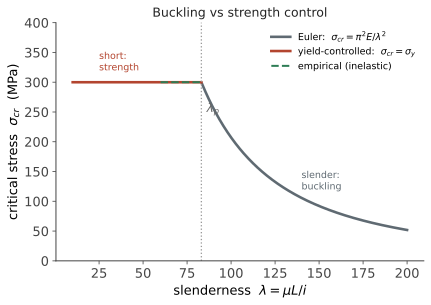

本页目录
力学 IV · 组合变形与屈曲
层次：本科核心 ｜ 这一页讲一种在理想细长弹性模型中可先于屈服发生的失效。 前三页的逻辑都是"应力超过许用值就失效"。屈曲不遵守这个逻辑——细长压杆可能在应力远低于屈服强度时突然失稳，且失稳后承载力急剧下降。它是结构失效中最危险的一类，因为它没有预兆、发展极快。
学习层：临界载荷是一条分界线，不是一张承载保证书
具体工程情境：检查一根可调支撑柱
机架上的压杆长 \(L=2.4\,\mathrm{m}\)，截面为直径 \(d=40\,\mathrm{mm}\) 的实心圆杆。工程师可以把端部从铰接改成夹持，也必须考虑初始弯曲 \(e_0\)、材料屈服和薄壁构件的局部板件失稳。问题不是只按一个公式报出数字，而是要回答：哪一个极限先到、真实杆在接近极限前已经偏了多少、以及理想杆的分岔载荷是否被缺陷放大效应掩盖。
必须提交的预测
- 在 \(E,I,L\) 不变时，把两端铰支改为两端固支，\(P_{cr}\) 会约变为几倍？
- 对有初始弯曲的柱，\(P/P_{cr}=0.8\) 时侧移放大因子是约 \(1.25\)、\(5\)，还是仍为 \(1\)？
- 高强钢与普通钢只有在相近 \(E\)、完全弹性、无缺陷的 Euler 理想模型中才会给出近似相同的 \(P_{cr}\)；实际设计还要检查什么？
正式公式桥：四个层次的校核
理想弹性细长柱的分岔载荷为
\(K\) 是有效长度系数。对一个小的第一模态初弯曲 \(e_0\sin(\pi x/L)\)，在 \(P<P_{cr}\) 的线弹性一阶近似下，中点侧移可写成
实验台同时显示：Euler 应力 \(\pi^2E/\lambda^2\)、材料屈服上限 \(P_y=A\sigma_y\)，以及一个独立的局部板件 \(b/t\) 筛查。这里 \(\min(P_{cr},P_y)\) 只是“理想弹性/屈服的先后”筛选，不是中等柔度柱的完整规范曲线；中间区要用残余应力、切线模量和规范的非弹性屈曲模型。
误区与模型边界
- Euler 的 \(P_{cr}\) 是完美直杆的分岔载荷；有偏心、残余应力和初弯曲的柱从一开始就弯，实际极限可能显著低于它。接近或超过 \(P_{cr}\) 时，上面的放大式本身也失效，不能把无穷大当成位移预测。
- 高强钢与普通钢的“相同屈曲载荷”只是相近弹性模量下的理想弹性结果；屈服、残余应力、初始缺陷、连接刚度和材料非弹性会让实际承载不同。
- 小柔度压杆可能先屈服，中柔度压杆处于非弹性屈曲；薄壁杆还可能在整体 Euler 屈曲之前发生局部屈曲。整体与局部校核不能相互替代。
- 本实验的 \(b/t\) 只是局部板件的预警阈值，不代替板件边界条件、宽厚比规范和局部屈曲特征值计算。
对应 lab 的静态 fallback
无 JavaScript 时仍可核对：默认 \(L=2.4\,\mathrm{m}\)、\(d=40\,\mathrm{mm}\)、\(E=210\,\mathrm{GPa}\)、\(\sigma_y=250\,\mathrm{MPa}\)、铰—铰 \(K=1\)，初弯曲 \(e_0=2\,\mathrm{mm}\)，\(P/P_{cr}=0.55\)。
| 账本项 | 公式/默认读数 | 单位或判定 |
|---|---|---|
| \(I=\pi d^4/64\) | \(1.25664\times10^{-7}\) | m\(^4\) |
| \(P_{cr}\) | \(\pi^2EI/(KL)^2=45.217\) | kN，理想分岔 |
| \(P_y=A\sigma_y\) | \(314.159\) | kN，屈服筛选上限 |
| 长细比 \(\lambda\) | \(KL/r=240.0\)（转折约 \(91.05\)） | Euler 候选适用 |
| \(P/P_{cr}\) | \(0.55\) | 未越过理想分岔 |
| 放大因子 | \(1/(1-P/P_{cr})\) | 约 \(2.22\) |
| 中点侧移 | \(e_0/(1-P/P_{cr})\) | 约 \(4.44\,\mathrm{mm}\) |
改端部条件会改变 \(K\)；把载荷比推近 1 会让柱的偏转箭头急剧放大。红色提示出现时，读者应回到“缺陷柱/非弹性/局部屈曲”的模型，而不是继续外推 Euler 数字。
迁移问题
一根薄壁工字柱的整体长细比很大，但翼缘宽厚比也超限。你会如何组织校核顺序，避免先得到一个漂亮的整体 \(P_{cr}\) 就忽略局部板件失稳？请说明至少一个需要补充的几何或边界条件。
一、欧拉临界载荷
理想细长压杆的临界载荷：
\(\mu\) 是长度系数，取决于两端约束：
| 约束 | \(\mu\) | 相对承载力 |
|---|---|---|
| 两端铰支 | 1.0 | 1× |
| 一端固定一端自由 | 2.0 | 0.25× |
| 两端固定 | 0.5 | 4× |
| 一端固定一端铰支 | 0.7 | 2× |
这张表的工程价值极高：仅仅改变端部约束，承载力就能相差 16 倍（\(\mu\) 从 2.0 到 0.5）。加强端部约束往往比加粗杆件便宜得多——这是压杆设计的第一手段。
注意公式里的三件事：
- 理想弹性 Euler 式只含 \(E\)，不含屈服强度。所以在相近 \(E\)、完全弹性、完美直杆的假设下，高强度钢与普通钢的理论 \(P_{cr}\) 可能近似相同；但残余应力、初始缺陷、非弹性屈曲、连接和局部屈曲都会改变实际极限，不能把这句话当成普遍结论。
- \(I\) 取最小值：杆件总是绕最小惯性矩轴屈曲。所以矩形截面压杆会朝"薄"的方向弯曲；
- \(L^2\) 在分母：长度是决定性因素，加支撑（缩短计算长度）效果立竿见影。
二、柔度与失效模式的边界
定义柔度（长细比）：

三个区域：
- 大柔度杆（\(\lambda > \lambda_p\)，钢约 100）：欧拉公式适用，屈曲控制；
- 中柔度杆：材料部分屈服，欧拉公式不再适用（它假设全程弹性），用经验公式；
- 小柔度杆（粗短）：强度控制，按屈服校核。
必须先判断在哪个区，再选公式——直接套欧拉公式给粗短杆算，会得到荒谬的高值。
三、为什么屈曲这么危险
① 它是不稳定的分岔，不是渐进的。 载荷达到临界值前，杆件几乎不弯；一旦越过，变形急剧增长。没有"快要坏了"的征兆。
② 缺陷敏感性。 理想直杆的理论是漂亮的，但真实杆件总有初始弯曲、加载偏心、材料不均。这些微小缺陷会：
- 使实际失稳载荷低于理论值；
- 让变形从一开始就逐渐增长（不是突然分岔）。
最极端的是壳体屈曲：薄壁圆柱壳受轴压时，实测承载力可能只有理论值的 20–30%，且分散度极大。这是固体力学中理论与实验差距最大的问题之一，工程上只能靠大量试验数据与很大的安全系数。这个"缺陷敏感"的现象值得记住——它是"理想化模型可能严重高估"的经典案例。
③ 后屈曲行为可能是灾难性的：某些结构（如壳体）屈曲后承载力下降，导致连锁垮塌。
四、其他失稳形式
屈曲不只是"压杆变弯"：
- 局部屈曲：薄壁截面的翼缘或腹板局部起皱。这限制了第三页"把材料移到外围"的策略——板太薄就会局部失稳。所以工字梁的翼缘宽厚比、管壁的径厚比都有限制，需要加劲肋。效率与稳定的权衡在此再次出现；
- 侧向扭转屈曲：细长梁受弯时，可能侧向弯曲并扭转失稳。这就是为什么深而窄的梁需要侧向支撑；
- 热屈曲：受热膨胀但被约束时产生压应力，可能屈曲（铁轨的"胀轨跑道"是典型事故）。
五、组合变形的一般方法
回到综合分析。真实零件常同时承受多种载荷，标准流程：
- 分解载荷：把复杂受载分解为拉压、弯曲（两个方向）、扭转；
- 叠加应力（线弹性下叠加原理成立）：正应力代数相加，切应力矢量相加；
- 找危险截面与危险点；
- 写出该点应力状态，用屈服准则折算等效应力；
- 校核：\(\sigma_{eq} \le [\sigma] = \sigma_s / n\)（\(n\) 为安全系数，第十六页）；
- 单独校核稳定性（屈曲）与刚度（变形量）。
注意第 6 步：强度、刚度、稳定性是三个独立的校核项，缺一不可。
- 强度：会不会坏；
- 刚度：变形是否超出允许（机床主轴变形过大会影响加工精度，即使远未损坏）；
- 稳定性：会不会失稳。
工程实践中，机床、精密设备的设计常由刚度控制而非强度控制——它们的应力水平往往很低，但对变形极敏感。"强度够了"不等于"设计合格"。
六、要点
- 理想弹性 Euler 屈曲只取决于 \(E\) 与几何；实际柱还要检查屈服、非弹性、残余应力、缺陷和局部屈曲，不能笼统地说“与材料强度无关”；
- 端部约束的影响可达 16 倍，加支撑缩短计算长度是最有效手段；
- 必须先按柔度判断是屈曲控制还是强度控制；
- 屈曲危险在于无预兆 + 缺陷敏感，壳体屈曲实测值可能仅为理论值的 20–30%；
- 局部屈曲限制了薄壁化的极限——效率与稳定的权衡；
- 强度、刚度、稳定性是三个独立校核项，精密设备常由刚度控制。
下一页：前面都是"分段公式"式的解法。能量法给出一个统一而强大的视角，它既是手算变形的利器，也是有限元法的理论基础。